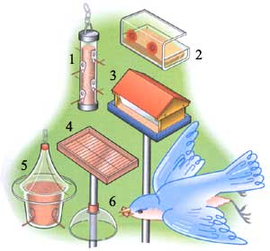
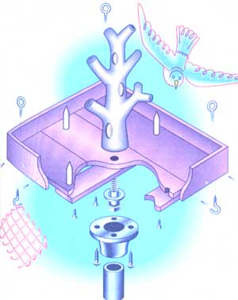

A practical guide to selecting the right style of feeder and bird food for your backyard.
Many people prefer hanging feeders, which
seem unobtrusive and save the expense of a
pole. If no convenient branch is available,
you may opt to mount a bracket on a window
sill or wall.
Types of Feeders
1.Ture
2. Window
3. Traditional
4. Platform
5. Mardarin
6. Squirrel guard
Many people worry that the moment they put up a bird feeder, that's it-their backyard birds will become completely dependent on them. They figure the birds will starve if they go away on vacation or are bed-ridden with the flu for a week, particularly during the brutal wintertime. According to recent studies from University of Wisconsin and Pennsylvania State University, it's a big myth. Both schools prove conclusively that even the most feeder-habituated birds forage for at least 80 percent of their diet. Regardless of the season, supplemental feeding has hardly any impact on birds at all. The real reason for setting up a backyard feeder is to enjoy good bird watching. By learning how to pick the right feeder, where to place it, and what to feed them, you'll be able to admire the birds of your choice year-round.
Bird-feeder designs range from the general, which attract a wide variety of birds, to the highly specific, which attract one or two types of birds. Although a general bird feeder does a reasonably good job, it does feed birds that you may not want in your yard or that may scare off those you do want. A highly specific feeder, on the other hand, may leave out birds that you would never know about. Why not put up both kinds? A well-stocked backyard (from the birds' point of view) would have a large, all-purpose feeder as well as a suet basket, and a feeder designed specifically for small, clinging birds such as nuthatches and chickadees.
Platform Feeders
Platform feeders, also called table feeders, are flat, uncovered surfaces, with a rim around the edges. Raised slightly off the ground, these feeders attract ground-feeding birds such as sparrows, juncos, and mourning doves. One advantage of this feeder is that birds can easily be photographed without the intrusive sight of the feeder in the picture. The biggest drawback is that they are completely helpless against squirrel attacks and the seeds are constantly exposed to wind and rain.
Traditional Feeders
These attractive feeders made of wood are designed to resemble a house with a peaked roof, and usually have a plastic-sided hopper to hold the seeds. A narrow gap between the bottom edges of the hopper sides and the platform makes up the bottom of the feeder, allowing access to the seed. When buying these feeders, look for solid, untreated wood (preferably red cedar) held together with glue and screws. Be sure the hopper panels are made of tough plastic and that the seed opening is no larger than half an inch. If the opening is any larger, small birds can push their heads in and get stuck.
Unfortunately, because the seed is dispensed on a platform, these feeders are often dominated by larger birds. Also, the rough surfaces of wooden feeders can harbor dangerous microorganisms, making them breeding grounds for infection among birds.
Tube Feeders
These feeders, made of a tough polycarbonate plastic such as Lexan and reinforced with non-corrosive metal, are a good overall choice. They are easy to fill, clean, and squirrel-proof, and you can hang them from a branch or mount them on a pole. Contrary to popular belief, the eyes and feet of birds will not freeze to metal feeder-parts and perches. So you don't have to avoid them or bother purchasing plastic covers for the metal parts.
Some designs allow moisture from condensation to get trapped inside, which can lead to moldy or sprouting seeds. If this happens, try drilling some small drainage holes into the bottom of the feeder. Seed also tends to get packed down into the bottom of the tubes, causing them to rot or mildew. This can be avoided by filling the bottom of the tube with coarse gravel up to the level of the lowest feeding port. The gravel will also help improve drainage.
When buying a plastic tube-feeder, look for non-corrosive metal (preferably zinc) perches and seed ports. The tubes are usually filled from the top and sealed with plastic or metal caps. The plastic ones will suffer squirrel attack pretty quickly, so buy a bunch of extra ones to replace them with.
Another problem is the seed trays that are frequently sold with the feeders. These trays attach to the bottom in order to catch seeds and hulls dropped by birds. The truth is, you’re better of without them. Squirrels find the seed tray either a convenient handhold or a nuisance; if the latter, they will destroy it. Large, unwanted birds such as rock doves (pigeons) use seed trays as perches while they hog all the food.
Window Feeders
Window feeders make for great bird watching on those dismal winter mornings-they will bring a variety of colorful birds practically within touching distance. These rectangular, platform feeders have a roof and are usually made of clear, tough plastic. They attach to the windowpane with inexpensive suction cups (which need to be replaced every six months or so) or to the window sill with screws or brackets. Sometimes, movement behind the window will frighten birds away; don't worry, they'll be back in a second, and eventually, they will learn to ignore viewers altogether. (Some birds-chickadees, most notoriously-are positively fearless at the feeder.) Many window feeders have one-way mirror coatings to allow for close-up viewing without scaring off the birds.
Exclusion Feeders
Like an exclusive club, these hanging feeders are designed to attract only a few specific types-mainly small, clinging birds such as chickadees. They have no perches, so larger birds such as jays and starlings can't get access to the food. Some exclusion feeders have an adjustable dome or some other system that lowers over the seed container to keep large birds out. Others have openings in the bottom so that only clinging birds can reach the food.
Squirrel-proof feeders
In actuality, there is no such thing as squirrel-proof feeders; however, there are squirrel-resistant feeders that will at least delay the inevitable. The Mandarin model, for example, has a steeply sloped roof with a large overhang, so squirrels can't reach over the roof to get to the seeds. Hang the Mandarin feeder high so that squirrels can't attack it from the bottom and hold onto the perches. Or better yet, don't install the perches when assembling.
The easiest way to feed your backyard birds is to simply spear a piece of fruit onto a
branch.
Other effective anti-squirrel feeders use vinyl-coated wire mesh placed around tube feeders; the squirrels can climb on the feeder but can't reach through the mesh to get to the seeds from the feeding ports. Counterweight feeders use springs to close off the seed compartment when the weight of a squirrel lands on the perching area.
Suet Feeders
Suet feeders are designed to attract woodpeckers, nuthatches, titmice, chickadees, among other birds. The simplest and best type is a basket made of vinyl-coated wire with a hinged opening at one end. It can be hung from a branch or nailed to a tree trunk. Some traditional wooden feeders even come with suet baskets attached to them. Attach your feeder firmly so it won't be carried off in the middle of the night by a hungry raccoon. You may also find dogs hanging around hopefully beneath a suet basket, waiting for scraps to fall. Some birds, particularly starlings, will dominate these feeders and keep other birds away. This is less of a problem with hanging baskets, since starlings are bad at clinging.
You can easily make your own suet feeders using mesh bags (the sort onions come in) or chicken wire. Or, for the easiest homemade version, spread peanut butter on a pine cone and hang it from a tree.
Hummingbird and Nectar Feeders
These feeders will attract hummingbirds, orioles, and others to your yard. Hummingbirds, found only in the Americas, are tiny, fearless birds that can fly backward. The average ruby-throated hummingbird is three-and-a-half inches long and weighs one-sixth of an ounce. (The smallest bird in the world is the bee hummingbird, only two and a quarter inches long, weighing less than a penny.) Of the 319 hummingbird species, only 15 are normally found in the United States.
In temperate climates, these feeders should be placed after frost is gone. To help birds find the feeder, hang it near flowering plants. (Hummingbirds are especially attracted to the color red.) Then, once the birds have discovered it, you can move the feeder to a shady location with a better view. Keep nectar feeders clean; bacteria breeds easily in the sugary liquid. To avoid bees and yellow jackets, select a dripless feeder; to avoid ants, coat the hanging wire or chain with petroleum jelly.
Fruit Feeders
Hanging fruit feeders that hold apple or orange halves on spears will bring a wide variety of birds throughout the year. Probably the easiest way to feed birds is to spear fruit onto the end of a branch. Expect visits from robins, cedar waxwings, wrens, and rose-breasted grosbeaks.
Homemade Feeders
Any clean, plastic container (soda and laundry detergent bottles, for example) can be made into a feeder by cutting a rectangular panel out of one side, a few inches from the bottom. Leave the cap on and fill the bottom with seed. A paper milk-or juice-carton will work well too. Slice off the bottom corners of the carton with a razor blade, cutting off just enough to allow a sunflower seed through the hole. Punch small holes in the carton next to the feeding holes and insert twigs or dowels into the holes as perches. Fill the carton with seed and staple it shut. Then punch a hole through the top of the conainer to accommodate a hanging chain and hook, and hang the feeder. These feeders will probably be demolished by squirrels, but they're fun while they last.
Your bird feeder should hold enough food so you don't have to slog out to it through the snow every day, but not so much that the seeds rot before the birds can eat it all. Since the rate of consumption varies with season and weather, put out feeders of different sizes at different times. You'll gather the widest range of birds that way.
Decide whether you want to hang the feeder on a branch, bracket, or mount it on a pole. Some prefer hanging feeders, which seem unobtrusive and save the expense and trouble of poles. For hanging feeders, use metal chains and S-hooks for hanging. Squirrels will bite through string, rope, monofilament fishing line, etc., sending your feeder crashing to the ground. Metal chain is inexpensive; even the decorative sort costs only pennies a foot.
If no convenient branch is available, you can mount a bracket on a window sill or wall. But be warned: almost all hanging feeders-no matter how well protected- eventually become local squirrel hangouts.
If you're sure about your hanging spot, and you don't mind mowing around it or seeing it all year long, mount the pole permanently in the ground using concrete. Alternatively, you can put a socket into the ground and lift the pole out when the feeder isn't in use. Pole stands are considerably simpler, but sometimes topple over.
Place your feeder about 10 feet away from a natural shelter (a hedge or shrub) to provide protection against predators and bad weather while they are waiting at the feeder. Brush piles-loose heaps of brush and branches-near the feeder also provide excellent shelter.
Birds will generally spot a feeder within a few days. If there's no action three or four days after putting one up, reconsider its location. Is the feeder too exposed? Is it too hidden from sight? Once they've learned to come to the feeder, keep moving it a few feet closer to your house-a little bit every night-until it's where you want it...perhaps by the window of your favorite room.
Excerpt taken from The Birdfeeder's Handbook , available for $12.45 postpaid from Lyons & Burford (31 W. 21st St., NY, NY 10010; 212/620-9580). You can also refer to Sheila Buff's "What to Feed the Birds" on page 66 of Mother's issue #130.
This feeder offers multiple habitats to attract most species of perching and climbing song birds, and kicks off enough seed to attract plenty of ground-feeders. It has a platform ample enough for a pound or two of seed and a water bowl, a tree limb drilled with suet pits for perching and climbing birds, dowels to hold fruit and suet/seed molds, and hooks for hanging bags. Hang from a tree limb or affix to a pipe held in a concrete collar buried well below soil line.
Materials
•Two 5/8” x 5½” x 6"
(actual measure) red cedar boards
•One 4" lagbolt and 2" flat washer
•40 1", #6 flat-head brass or zinc-plated woodscrews
•3/8" dowel, eyehooks
•A branched tree limb or piece of driftwood
For post-mount: 10' of 2" galvanized thread-end pipe, junction, rail flange, concrete mix
To hang: 4 eye screws, 12'+/- gal. twist-link chain, "S" hooks, hanging hardware.
Cut one 5½ wide cedar board into three even 2'-long baseboards. Split the other down the middle and divide into three 2¾” x 16¾" fastening cleats. Butt the three baseboards together along their long sides and place one cleat in the center and the other two even with the cut ends. Fasten with six 1" screws-two screws per baseboard. Drill pilot holes and ¼” countersinks for all screws. Cutting at opposing, flat 45° angles to give mitered corners, trim lengths of the split board to fit ends and edges of the platform and hot-glue tack them to the platform low enough to cover the bottom cleats and give a good lip along the top. Fasten every three inches. (Along the cut ends of the baseboards, sink screws into cross-grain of the underlying cleat, not into the poor-holding end-grain.)
Cut and trim a stout, close-branching young tree with about a 3" butt, or scavenge or buy (from a tropical fish store) a piece of driftwood. With a 1" spade bit, drill several inch-deep pits into the stem. Trim branches, cut the limb bottom flat and drill ¼” pilot holes through the center-bottom of the platform and 3" up into the limb base. Drop the flat washer over the lagscrew and wrench it through the under-side of the platform and into the hole in the base of the limb. Drill "15/16" or 29/32" through-holes 2" from the edge at the middle of ends and sides of the platform top and insert three-inch 3/8" dowels whittled to a point at top. Put eyehooks into the corners of the bottom.
To hang the feeder, put eye screws into each top-corner and suspend from a limb with galvanized chain and "S" hooks. To support a rail-flange for a pole-mount, fasten two 6" lengths of the split cedar board to each side of the center cleat. Disinfect periodically by scrubbing with ammonia; let dry and soak with a good deck preservative.
|
 ILLUSTRATION BY SCOTT MACNEIL |
 |
|